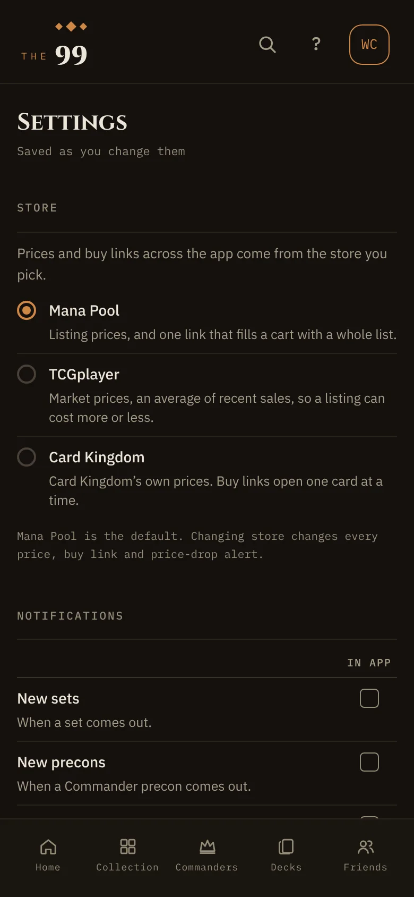
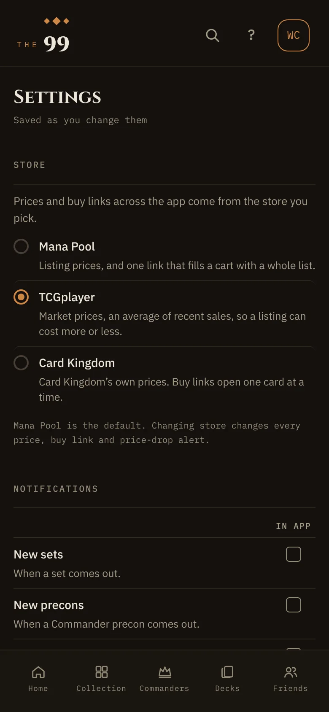
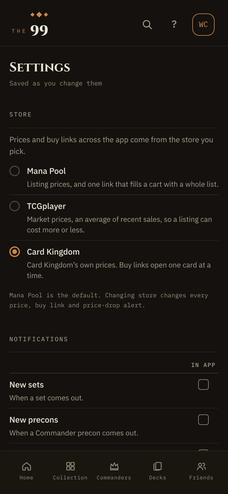
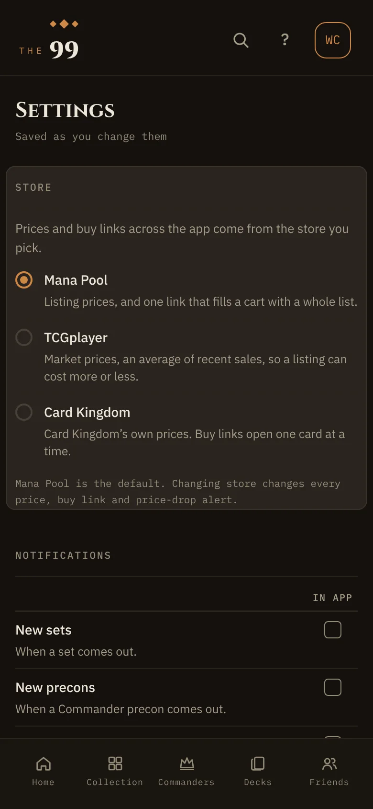
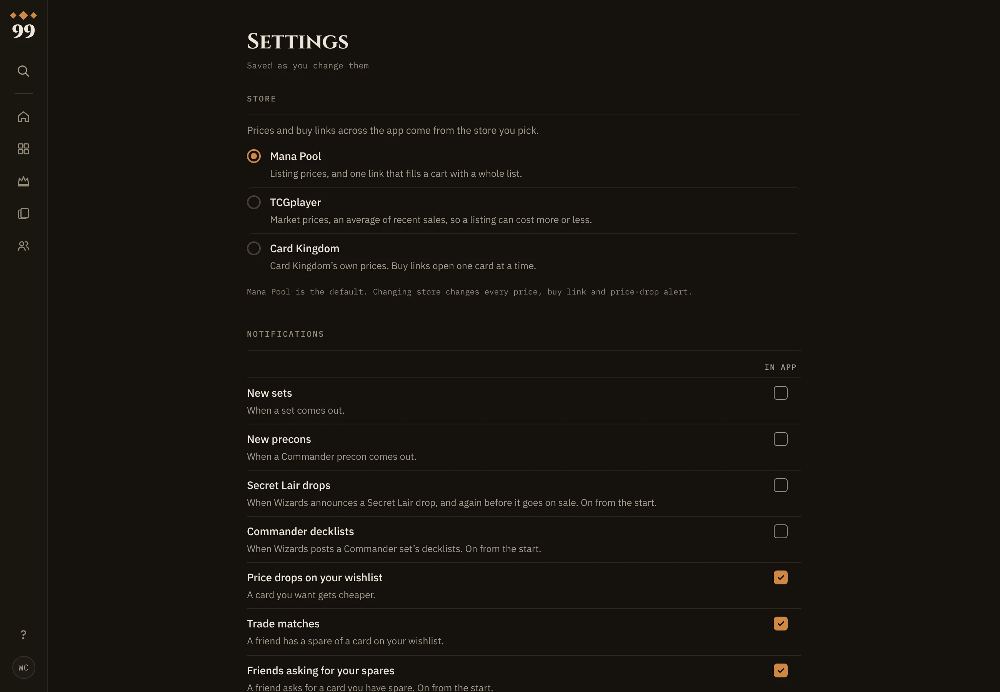
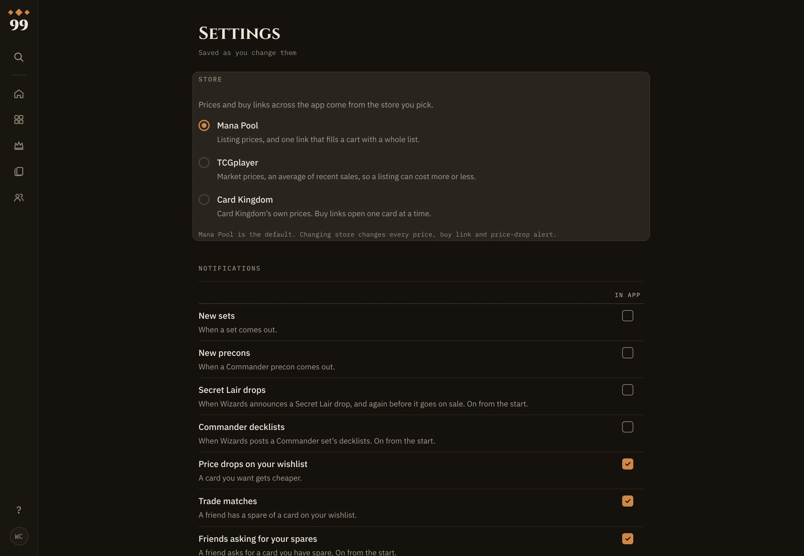

First on the page, above Notifications. One radio row per store from the store list; the foot is the one place that says Mana Pool is the default. Saved as it changes, as the page sub says.

S1 · Mana Pool, the default
A new player sees this: Mana Pool chosen, the foot under the three rows.

S2 · TCGplayer
The row’s line is the long form of the accuracy note.

S3 · Card Kingdom
Card Kingdom’s line says links open one card at a time.

S4 · Arrived from Change store
/settings#settings-store: the section takes the elevated wash and ring for two seconds, then fades (Your decks’ wash).

S5 · Desktop
The same section in the 720 column.

S6 · Desktop, washed
From the strip’s Change store link.